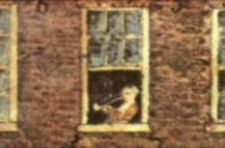

|
by Stefan Bielinski Balthazar (Baltus) Lydius was born in Albany in 1740, the youngest son of John H. and Genevieve Masse Lydius. Unlike his older brother, Martinus, he grew up in Albany more than at the family trading post at Fort Edward. Also, unlike Martinus, his life was more reticent than active. For still unknown reasons, he never married. For much of his adult life, he lived with his charming and able mother. Also puzzling is the absence of a service record for him during the last of the colonial wars. Although he lived most of his life in the family home at State and Pearl, he did not assume the family business when his father went to England and never returned. At age 27, he was listed on the Albany militia rolls, was paid small sums as a contractor of the city, and later served as a firemaster in his home first ward. During the War for Independence, the only record of any activity came in May 1777 when he was denounced by the Albany Committee as one of the leaders of a suspected conspiracy to attack and destroy the city. However, no further mention of the incident has been uncovered. The next year, he may have been one of a number of Albany people who wrote the governor on behalf of William Rogers, a suspected horse thief. The absence of involvement for a native son of his age and station may point to some physical or emotional deficency. The end of the war and the death of his mother and brother made middle-aged Baltus Lydius's life more and more reclusive. The first Federal Census of 1790 identified him as the sole occupant of the old Lydius house. A decade later, the census showed a slave living in his house as well. Although appearing on tax assessment rolls, his name has not been found in the records of Albany government or in those of the city's businesses and organizations. However, he was the subject of a surprizing number of anecedotes. Local lore tells us that he lived alone except for a "pale faced, melancholy looking cat," rarely using lights, never let anyone in his home, and was called an "eccentric old bachelor and the terror of all the boys . . . a tall, thin Dutchman with bullet head, fond of his pipe and bottle, gloried in celebacy until [late in life when he] . . . gave a pint of gin for a squaw calling her his wife and lived with her until his death." Another account referred to Old Mr. Lydius as ". . .something of a lion in his day, unusually tall, raw boned, singular in his habits, eccentric in his character, independent, honest, and gruff as a bear." Balthazar Lydius died "suddenly" in November 1815 at age 78. This grandson of a revered Dutch Reformed minister was buried from St. Peters Episcopal Church. His obituary noted that he was "a very eccentric character and last male descendant." Short on accomplishments, Balthazar Lydius was remembered by a number of historical chroniclers. One of the cityscapes painted by James Eights featured the Lydius house and was dated 1814. In an upper window, sat an older man smoking his pipe. The Lydius family name passed from Albany rolls with his death. The life of Balthazar Lydius is Colonial Albany Social History Project biography number 4620. This profile is derived chiefly from family and community-based resources. This detail from a watercolor by James Eights shows a man in the upstairs window of the Lydius House. Print in the collection of the New York State Museum. first posted: 8/20/00; revised 11/02 |